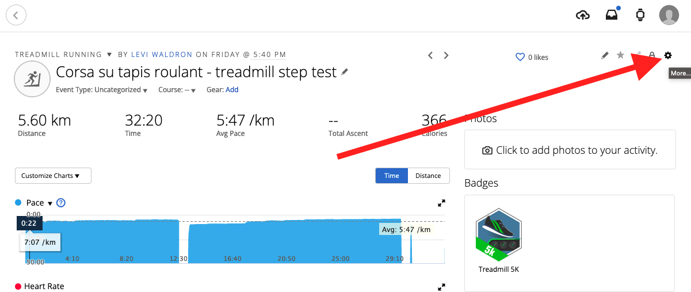
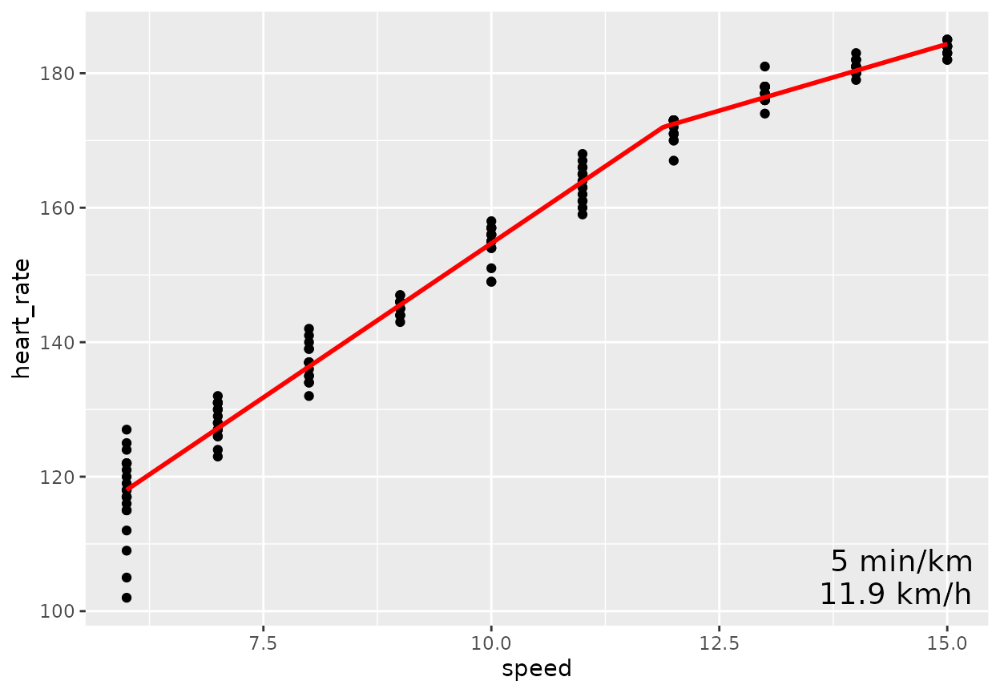
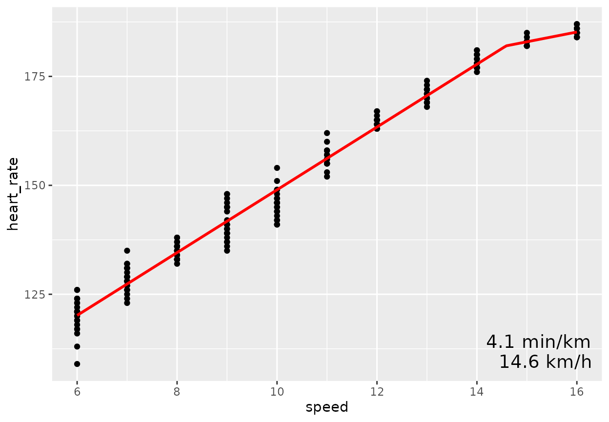
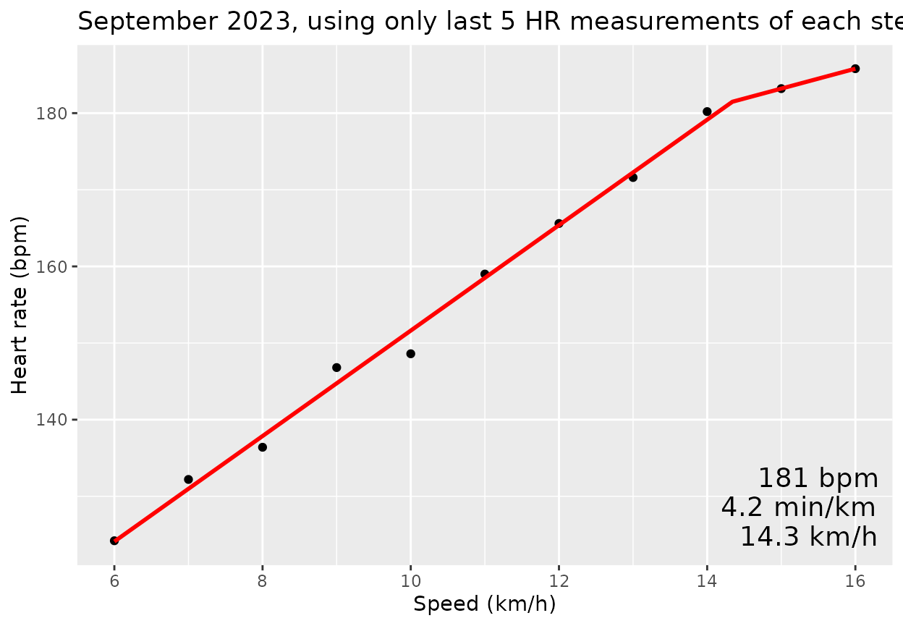
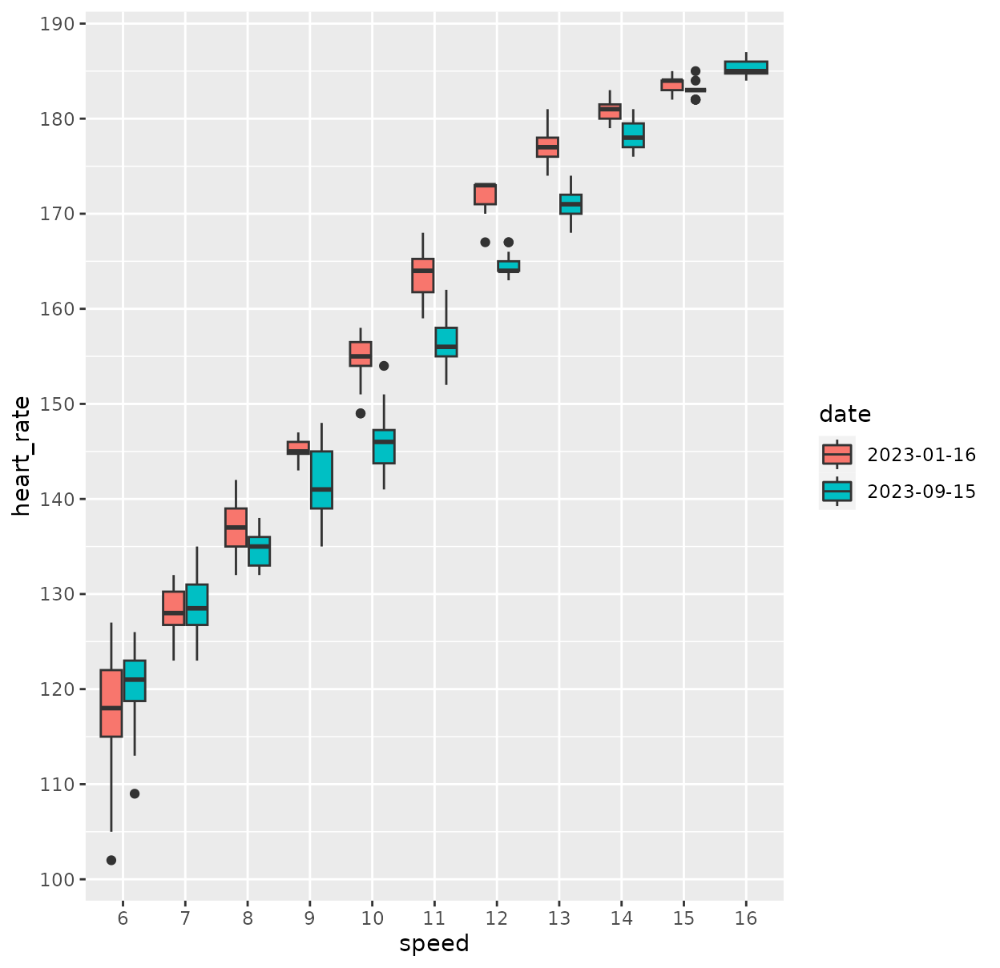
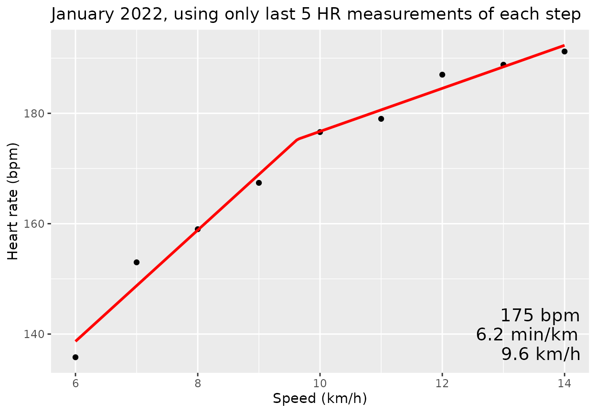
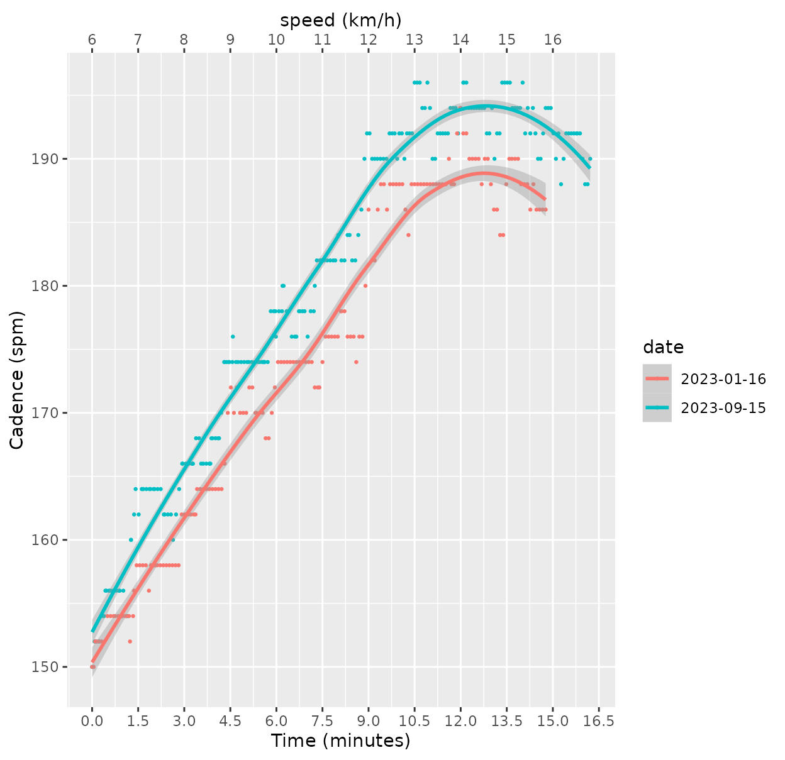
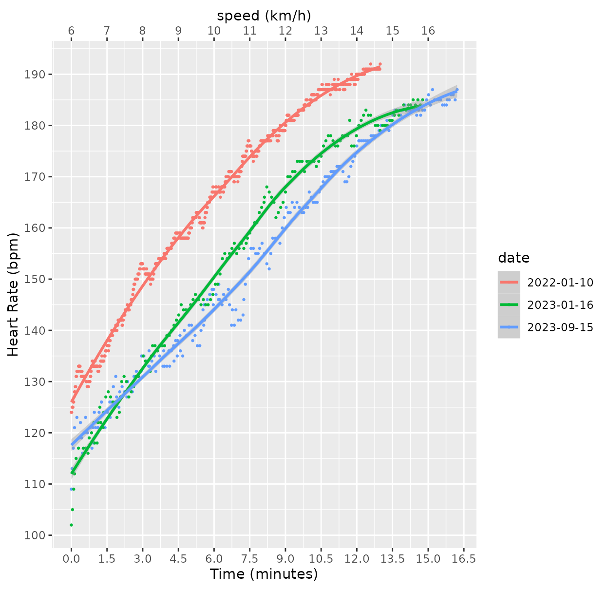
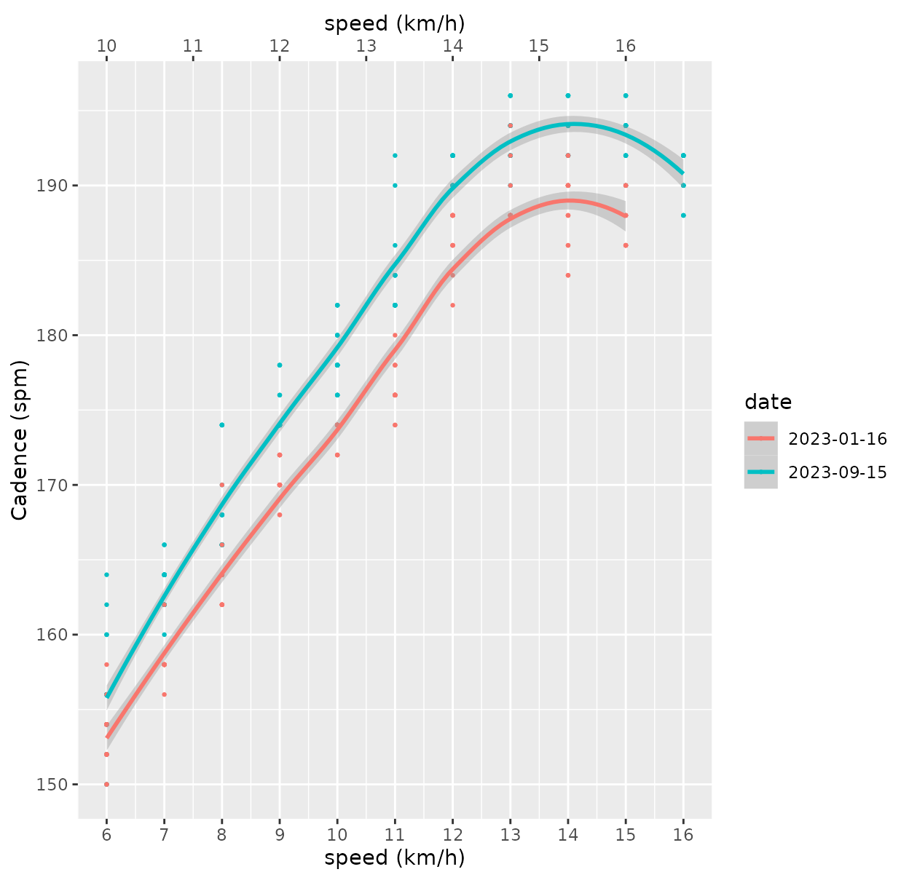

Analysis of Garmin TCX data for Conconi anaerobic threshold test
Source:vignettes/usage.Rmd
usage.RmdBackground
Rationale and validation for this method of estimating anaerobic threshold is described by Conconi et al. (1996), but also disputed e.g. by Jeukendrup et al. (1997) and Hofmann et al. (1997) (see References).
Performing the test
Use a chest strap heart rate monitor if available.
- set the treadmill to 1% incline to compensate for lack of wind resistance
- warm up by jogging on the treadmill at a slow speed for 10 minutes
- rest for 10 minutes with light static or dynamic stretching
- start at a low speed where you can still jog, not run, and have several steps before you hit your anaerobic threshold. 6km/h is a likely choice. km/h is likely better than mph for the smaller steps in speed.
- spend 90 seconds at each speed. After 90 seconds, increase the speed by 1 km/h
- continue until exhaustion, when you can no longer maintain the speed. The test ends and the end of the last segment where the full 90 seconds are completed.
At the end of the test, you can remain still for several minutes with the heart rate monitor still recording, to separately measure and compare rate of recovery. Analysis of heart rate recovery isn’t currently handled by this package however.
Exporting the Garmin TCX file
Open the workout in the web version of Garmin Connect. Click the gearbox in the upper right-hand side:

Then, export to TCX:
Non-Garmin data
Actually you don’t need to import a TCX file, what matters for the
fitmodel() function is that you provide a data.frame with
columns time, heart_rate, and optionally
speed.
If you import a TCX file that is not from Garmin Connect, you may
need to rename the column containing heart rate to
heart_rate and the column containing time to
time. The time column should be in seconds or
a format that can be coerced to seconds using as.numeric(),
such as the POSIXct/POSIXlt formats that most services likely provide.
If useDeviceSpeed is FALSE, then the speed column should be
speed.
How to figure out startminutes and endminutes
Useful in case the run was started before the start of the actual step test, or ended after.
Note, files in this package are gzipped to save space. TCX files
exported as above will not have the .gz extension and you
should not use the gzfile() adapter used below.
fname = system.file("extdata/2023-01-16.tcx.gz", package = "ConconiAnaerobicThresholdTest")
tmp <- prepdata(gzfile(fname), startminutes = 0, endminutes = 100,
useDeviceSpeed = TRUE)
plot(tmp$minutes, tmp$speed)
plot(tmp$minutes, tmp$cadence_running)
plot(tmp$minutes, tmp$heart_rate)By iteratively adjusting the startminutes and
endminutes and replotting, or just replotting with adjusted
axes, I found that the correct start time was at 0.15 minutes and
correct end time at 15 minutes.
January 2023 test
Import the data and show the same plots.
dat202301 <- prepdata(gzfile(fname), startminutes = 0.15, endminutes = 15,
useDeviceSpeed = FALSE)
(dat202301$date = substr(dat202301$time[1], 1, 10))
#> [1] "2023-01-16"
plot(dat202301$minutes, dat202301$speed)
plot(dat202301$minutes, dat202301$cadence_running)
plot(dat202301$minutes, dat202301$heart_rate)Model fitting
This model uses all available data points:
fitmodel(dat202301, alldata = TRUE, title = "January 2023, using all HR data")
#> [1] "Threshold alpha: 11.8861748818112"
#> [1] ""
#> [1] "Model coefficients: Beta[0], Beta[1], Beta[2]"
#> (Intercept) x w
#> 63.027275 9.167789 -5.201732
#> 
And this model uses only the final 5 measurements in each step:
fitmodel(dat202301, alldata = FALSE, title = "January 2023, using only last 5 HR measurements of each step")
#> [1] "Threshold alpha: 12.3667609360595"
#> [1] ""
#> [1] "Model coefficients: Beta[0], Beta[1], Beta[2]"
#> (Intercept) x w
#> 73.442849 8.242858 -4.842851
#> Sept 15, 2023 test
fname = system.file("extdata/2023-09-15.tcx.gz",
package = "ConconiAnaerobicThresholdTest")
dat202309 <- prepdata(gzfile(fname), startminutes = 23.8, endminutes = 40.1,
useDeviceSpeed = FALSE)
dat202309$date = substr(dat202309$time[1], 1, 10)
with(dat202309, plot(minutes, speed))
Model fitting
fitmodel(dat202309, alldata = TRUE, title = "September 2023, using all HR data")
#> [1] "Threshold alpha: 14.5862765638889"
#> [1] ""
#> [1] "Model coefficients: Beta[0], Beta[1], Beta[2]"
#> (Intercept) x w
#> 76.921892 7.205029 -4.961977
#> 
fitmodel(dat202309, alldata = FALSE, title = "September 2023, using only last 5 HR measurements of each step")
#> [1] "Threshold alpha: 14.3405968989953"
#> [1] ""
#> [1] "Model coefficients: Beta[0], Beta[1], Beta[2]"
#> (Intercept) x w
#> 82.822218 6.880000 -4.279986
#> 
Jan 10, 2022 test
fname = system.file("extdata/2022-01-10.tcx.gz",
package = "ConconiAnaerobicThresholdTest")
dat202201 <- prepdata(gzfile(fname), startminutes = 26, endminutes = 38.99,
useDeviceSpeed = FALSE)
dat202201$date = substr(dat202201$time[1], 1, 10)Model fitting
fitmodel(dat202201, alldata = TRUE, title = "January 2022, using all HR data")
#> [1] "Threshold alpha: 10.4210375092312"
#> [1] ""
#> [1] "Model coefficients: Beta[0], Beta[1], Beta[2]"
#> (Intercept) x w
#> 76.397735 9.484450 -4.844825
#> 
fitmodel(dat202201, alldata = FALSE, title = "January 2022, using only last 5 HR measurements of each step")
#> [1] "Threshold alpha: 9.63106140240239"
#> [1] ""
#> [1] "Model coefficients: Beta[0], Beta[1], Beta[2]"
#> (Intercept) x w
#> 78.199938 10.080009 -6.180004
#> 
2022-23 together
Some plots demonstrating comparison of two tests. First join the two data.frames, and convert date and speed to factors (to make plots appear the way I want them to).
xall <- full_join(x=dat202309, y=dat202301) |>
full_join(y=dat202201) |>
mutate(date = factor(date)) |>
mutate(speed = factor(speed))
#> Joining with `by = join_by(time, latitude, longitude, altitude, distance,
#> heart_rate, speed, cadence_running, cadence_cycling, power, temperature,
#> minutes, date)`
#> Joining with `by = join_by(time, latitude, longitude, altitude, distance,
#> heart_rate, speed, cadence_running, cadence_cycling, power, temperature,
#> minutes, date)`Boxplot of heart rate vs speed
ggplot(xall, aes(x=speed, y=heart_rate, fill = date)) +
geom_boxplot() +
scale_y_continuous(breaks=seq(90, 200, by=10))
Scatterplot with Loess smoothing curve for heart rate vs speed
ggplot(xall, aes(x = minutes, y = heart_rate, color = date)) +
geom_point(size = 0.5) +
geom_smooth() +
scale_y_continuous(breaks = seq(90, 200, by = 10), name = "Heart Rate (bpm)") +
scale_x_continuous(breaks = seq(0, 16.5, by = 1.5), name = "Time (minutes)",
sec.axis = sec_axis( ~ . / 1.5 + 6,
name = "speed (km/h)",
breaks = seq(6, 16, by = 1)))
#> `geom_smooth()` using method = 'loess' and formula = 'y ~ x'
Scatterplot with Loess smoothing curve for running cadence vs speed
filter(xall, date != "2022-01-10") |> # bad cadence data from 2022-01-10
ggplot(aes(
x = as.numeric(as.character(speed)),
y = 2 * cadence_running,
color = date
)) +
geom_point(size = 0.5) +
geom_smooth() +
scale_y_continuous(breaks = seq(150, 200, by = 10), name = "Cadence (spm)") +
scale_x_continuous(
breaks = seq(0, 16.5, by = 1),
name = "speed (km/h)",
sec.axis = sec_axis(~ . / 1.5 + 6,
name = "speed (km/h)",
breaks = seq(6, 16, by = 1))
)
#> `geom_smooth()` using method = 'loess' and formula = 'y ~ x'